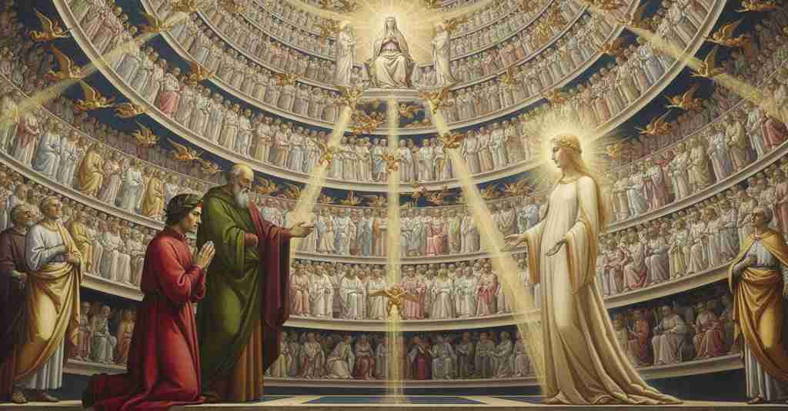

Paradiso — Canto 31

Giunto nell'Empireo, Dante ammira la candida rosa dei beati, si congeda da Beatrice che torna al suo seggio, e accoglie come nuova guida San Bernardo, che lo invita a contemplare la Vergine Maria. Having arrived in the Empyrean, Dante admires the white rose of the blessed, takes leave of Beatrice who returns to her throne, and welcomes St. Bernard as his new guide, who invites him to contemplate the Virgin Mary. 至高天に到着したダンテは、福者たちの白い薔薇を感嘆し、自らの玉座に戻るベアトリーチェに別れを告げ、新たな導き手として聖ベルナルドゥスを迎え、彼に促されて聖母マリアを観想する。
1
In forma dunque di candida rosa
In form then of a white rose
かくして白い薔薇の形で
2
mi si mostrava la milizia santa
was shown to me the holy host
私に聖なる軍勢は示された
3
che nel suo sangue Cristo fece sposa;
that in his blood Christ made his bride;
キリストがその血によって花嫁とした軍勢が。
4
ma l’altra, che volando vede e canta
but the other, that flying sees and sings
しかし他なるもの（天使たち）は、飛びながら見て歌う
5
la gloria di colui che la ’nnamora
the glory of him who enamors it
自らを恋い焦がれさす方の栄光と
6
e la bontà che la fece cotanta,
and the goodness that made it so great,
自らをかくも偉大にした善を。
7
sì come schiera d’ape che s’infiora
just like a swarm of bees that enters the flowers
それは蜂の群れのように、ある時は花に群がり
8
una fïata e una si ritorna
one moment and the next returns
またある時は戻っていく
9
là dove suo laboro s’insapora,
to where its labor takes on flavor,
その労働が味わいを増す場所へと。
10
nel gran fior discendeva che s’addorna
descended into the great flower that is adorned
そのように大いなる花へと下りていった、飾られた
11
di tante foglie, e quindi risaliva
with so many leaves, and from there re-ascended
多くの花びらを持つ花へ、そしてそこから昇っていった
12
là dove ’l süo amor sempre soggiorna.
to where its love forever dwells.
その愛が常に留まる場所へと。
13
Le facce tutte avean di fiamma viva
Their faces all were of living flame
その顔は皆、生ける炎であり
14
e l’ali d’oro, e l’altro tanto bianco,
and their wings of gold, and the rest so white,
翼は黄金、そして残りはそれほどに白く、
15
che nulla neve a quel termine arriva.
that no snow reaches that limit.
いかなる雪もその域には達しない。
16
Quando scendean nel fior, di banco in banco
When they descended into the flower, from tier to tier
彼らが花に下りる時、段から段へと
17
porgevan de la pace e de l’ardore
they offered of the peace and of the ardor
平和と情熱を差し出していた
18
ch’elli acquistavan ventilando il fianco.
that they acquired by fanning their sides.
脇腹を煽ることによって得たものを。
19
Né l’interporsi tra ’l disopra e ’l fiore
Nor did the interposing between the high and the flower
また、上なるものと花との間に介在することも
20
di tanta moltitudine volante
of so great a flying multitude
かくも多くの飛ぶ群れが
21
impediva la vista e lo splendore:
impede the sight and the splendor:
視界と輝きを妨げはしなかった。
22
ché la luce divina è penetrante
for the divine light is penetrating
なぜなら神の光は貫き通るからだ
23
per l’universo secondo ch’è degno,
through the universe according to what is worthy,
宇宙を、それがふさわしい度合いに応じて、
24
sì che nulla le puote essere ostante.
so that nothing can be an obstacle to it.
いかなるものもそれに抗うことはできない。
25
Questo sicuro e gaudïoso regno,
This secure and joyous kingdom,
この安らかで喜びに満ちた王国は、
26
frequente in gente antica e in novella,
populous with people ancient and new,
古き民と新しき民で賑わい、
27
viso e amore avea tutto ad un segno.
had its sight and love all on one mark.
視線も愛もすべてを一つの印に向けていた。
28
O trina luce che ’n unica stella
O triune light that in a single star
おお、三位一体の光よ、一つの星のうちに
29
scintillando a lor vista, sì li appaga!
scintillating to their sight, so satisfies them!
彼らの視界にきらめき、かくも彼らを満足させる光よ！
30
guarda qua giuso a la nostra procella!
look down here upon our storm!
我らの嵐を、ここ下界に見そなわせ！
31
Se i barbari, venendo da tal plaga
If the barbarians, coming from such a region
もし蛮族が、そのような地方から来て、
32
che ciascun giorno d’Elice si cuopra,
that is covered each day by Helice,
日々ヘリケーに覆われる地方から、
33
rotante col suo figlio ond’ ella è vaga,
rotating with her son of whom she is fond,
彼女が愛する息子と共に回転するヘリケーに、
34
veggendo Roma e l’ardüa sua opra,
seeing Rome and its arduous work,
ローマとその壮大な偉業を見て、
35
stupefaciensi, quando Laterano
were struck with amazement, when the Lateran
驚嘆したのなら、ラテラノが
36
a le cose mortali andò di sopra;
went above mortal things;
人間のあらゆるものを超えた時に。
37
ïo, che al divino da l’umano,
I, who to the divine from the human,
私は、人間界から神の世界へ、
38
a l’etterno dal tempo era venuto,
to the eternal from time had come,
時間の中から永遠へ来た者、
39
e di Fiorenza in popol giusto e sano,
and from Florence to a people just and sane,
そしてフィレンツェから、正しく健やかな民の中へと、
40
di che stupor dovea esser compiuto!
with what stupor must I have been filled!
どれほどの驚きに満たされたことであろうか！
41
Certo tra esso e ’l gaudio mi facea
Certainly between it and the joy it made me
確かに、その驚きと喜びの間で私は
42
libito non udire e starmi muto.
wish not to hear and to remain mute.
何も聞かず、黙していることを望んだ。
43
E quasi peregrin che si ricrea
And like a pilgrim who restores himself
そして、あたかも巡礼者が気を取り直すかのように
44
nel tempio del suo voto riguardando,
in the temple of his vow by gazing,
誓いの神殿を眺め、
45
e spera già ridir com’ ello stea,
and hopes already to tell again how it stands,
すでにそれがどうであったかを語ることを望むように、
46
su per la viva luce passeggiando,
up through the living light passing,
生ける光の中を歩きながら、
47
menava ïo li occhi per li gradi,
I led my eyes along the tiers,
私は目を階層に沿って巡らせた、
48
mo sù, mo giù e mo recirculando.
now up, now down, and now circling back.
ある時は上へ、ある時は下へ、そしてまた巡りながら。
49
Vedëa visi a carità süadi,
I saw faces made sweet by charity,
私は慈愛に満ちた顔々を見た、
50
d’altrui lume fregiati e di suo riso,
with another's light adorned and with their own smile,
他者（神）の光と自らの微笑みで飾られ、
51
e atti ornati di tutte onestadi.
and acts adorned with all honesty.
あらゆる威厳で飾られた姿を。
52
La forma general di paradiso
The general form of paradise
天国の全体像は
53
già tutta mïo sguardo avea compresa,
my gaze had already taken all in,
すでに私の視線が捉えていた、
54
in nulla parte ancor fermato fiso;
not yet fixed intently on any part;
どの部分にもまだじっと留まることなく。
55
e volgeami con voglia rïaccesa
and I was turning with reawakened desire
そして私は、再び燃え上がった欲求をもって振り向いた
56
per domandar la mia donna di cose
to ask my lady about things
私の貴婦人に物事を尋ねるために
57
di che la mente mia era sospesa.
on which my mind was suspended.
私の心が宙吊りになっていた事柄を。
58
Uno intendëa, e altro mi rispuose:
I intended one thing, and another answered me:
一つのことを意図すると、別のことが私に答えた。
59
credea veder Beatrice e vidi un sene
I thought to see Beatrice and I saw an elder
ベアトリーチェを見ると思っていたが、一人の老人を見た
60
vestito con le genti glorïose.
clothed with the glorious folk.
栄光の民と共に装った。
61
Diffuso era per li occhi e per le gene
Poured out over his eyes and his cheeks
その目と頬には広がっていた
62
di benigna letizia, in atto pio
was a benign gladness, in a pious aspect
慈悲深い喜びが、敬虔な態度で
63
quale a tenero padre si convene.
such as befits a tender father.
優しい父にふさわしいように。
64
E «Ov’ è ella?», sùbito diss’ io.
And “Where is she?” I said at once.
そして「彼女はどこに？」と、私はすぐに言った。
65
Ond’ elli: «A terminar lo tuo disiro
Whence he: “To bring your desire to its end
すると彼は言った、「あなたの望みを終わらせるために
66
mosse Beatrice me del loco mio;
Beatrice moved me from my place;
ベアトリーチェが私を私の場所から動かしたのだ。
67
e se riguardi sù nel terzo giro
and if you look up into the third circle
そしてもしあなたが第三の環の上を見上げれば
68
dal sommo grado, tu la rivedrai
from the highest rank, you will see her again
至高の階から、あなたは彼女を再び見るだろう
69
nel trono che suoi merti le sortiro».
on the throne her merits have allotted her.”
その功績が彼女に割り当てた玉座に」。
70
Sanza risponder, li occhi sù levai,
Without answering, I raised my eyes up,
答えることなく、私は目を上へと上げた、
71
e vidi lei che si facea corona
and saw her who was making a crown for herself
そして彼女が冠をなしているのを見た
72
reflettendo da sé li etterni rai.
by reflecting from herself the eternal rays.
自らから永遠の光を反射して。
73
Da quella regïon che più sù tona
From that region which thunders highest up
最も高く雷鳴が轟くあの領域から
74
occhio mortale alcun tanto non dista,
no mortal eye is so distant,
いかなる定命の目もそれほど遠くはない、
75
qualunque in mare più giù s’abbandona,
whoever plunges deepest into the sea,
海の一番底に身を委ねる者であっても、
76
quanto lì da Beatrice la mia vista;
as my sight was there from Beatrice;
そこでのベアトリーチェからの私の視線ほどには。
77
ma nulla mi facea, ché süa effige
but it made no difference to me, for her image
しかしそれは私には何の影響も与えなかった、なぜなら彼女の姿は
78
non discendëa a me per mezzo mista.
did not descend to me through a mixed medium.
間に何も混じることなく私に下りてきたからだ。
79
«O donna in cui la mia speranza vige,
“O lady in whom my hope is strong,
「おお、我が希望が生きる貴婦人よ、
80
e che soffristi per la mia salute
and who for my salvation endured
そして私の救いのために耐え忍んだ方よ
81
in inferno lasciar le tue vestige,
to leave your footprints in Hell,
地獄にあなたの足跡を残すことを、
82
di tante cose quant’ i’ ho vedute,
of all the many things that I have seen,
私が見てきた数々の物事について、
83
dal tuo podere e da la tua bontate
from your power and from your goodness
あなたの力とあなたの善意から
84
riconosco la grazia e la virtute.
I recognize the grace and the virtue.
私は恩寵と徳を認識します。
85
Tu m’hai di servo tratto a libertate
You have drawn me from a slave to liberty
あなたは私を奴隷から自由へと引き上げた
86
per tutte quelle vie, per tutt’ i modi
by all those paths, by all those means
あらゆる道、あらゆる方法によって
87
che di ciò fare avei la potestate.
by which you had the power to do so.
それを行う力を持っていた。
88
La tua magnificenza in me custodi,
Guard your magnificence in me,
あなたの壮大さを私の中に守ってください、
89
sì che l’anima mia, che fatt’ hai sana,
so that my soul, which you have made whole,
私の魂が、あなたが健全にしたものが、
90
piacente a te dal corpo si disnodi».
pleasing to you may be untied from the body.”
あなたに喜ばれて体から解き放たれるように」。
91
Così orai; e quella, sì lontana
So I prayed; and she, as far away
このように私は祈った。すると彼女は、あれほど遠くに
92
come parea, sorrise e riguardommi;
as she appeared, smiled and looked at me;
見えたにもかかわらず、微笑んで私を見つめた。
93
poi si tornò a l’etterna fontana.
then she turned back to the eternal fountain.
それから彼女は永遠の泉へと向き直った。
94
E ’l santo sene: «Acciò che tu assommi
And the holy elder: “So that you may bring to its summit
そして聖なる老人は言った、「そなたが旅路を
95
perfettamente», disse, «il tuo cammino,
perfectly,” he said, “your journey,
完璧に」「完遂するために、
96
a che priego e amor santo mandommi,
for which prayer and holy love have sent me,
祈りと聖なる愛が私を遣わしたのだが、
97
vola con li occhi per questo giardino;
fly with your eyes through this garden;
この庭園を眼で飛び回るがよい。
98
ché veder lui t’acconcerà lo sguardo
for seeing it will prepare your gaze
なぜなら、それを見ることでそなたの視線は
99
più al montar per lo raggio divino.
the more for mounting through the divine ray.
神の光線を昇るためにより一層整えられるだろう。
100
E la regina del cielo, ond’ ïo ardo
And the queen of heaven, for whom I burn
そして天の女王が、その方への愛で私は
101
tutto d’amor, ne farà ogne grazia,
entirely with love, will grant us every grace,
全身を燃やしているのだが、あらゆる恩寵を我らに授けてくださるだろう、
102
però ch’i’ sono il suo fedel Bernardo».
because I am her faithful Bernard.”
なぜなら私はその忠実なベルナルドゥスなのだから」。
103
Qual è colui che forse di Croazia
As is he who perhaps from Croatia
クロアチアから来た者が
104
viene a veder la Veronica nostra,
comes to see our Veronica,
我らのヴェロニカを見るためにやって来て、
105
che per l’antica fame non sen sazia,
who for his long-held hunger is not sated,
その古くからの名声ゆえに飽き足らず、
106
ma dice nel pensier, fin che si mostra:
but says in his thoughts, as long as it is shown:
それが示される間、心の中でこう言う、
107
‘Segnor mio Iesù Cristo, Dio verace,
‘My Lord Jesus Christ, true God,
「我が主イエス・キリスト、まことの神よ、
108
or fu sì fatta la sembianza vostra?’;
was your countenance then made like this?’;
あなた様のお姿はかくもこのようであったのですか？」と。
109
tal era io mirando la vivace
such was I while gazing on the living
そのようであった私は、この世において
110
carità di colui che ’n questo mondo,
charity of him who in this world,
生き生きとした慈愛を見つめながら、
111
contemplando, gustò di quella pace.
by contemplating, tasted of that peace.
観想のうちに、かの平安を味わった者の。
112
«Figliuol di grazia, quest’ esser giocondo»,
“Son of grace, this joyful existence,”
「恩寵の子よ、この喜ばしき存在は」
113
cominciò elli, «non ti sarà noto,
he began, “will not be known to you,
と彼は始めた、「そなたには知られないだろう、
114
tenendo li occhi pur qua giù al fondo;
keeping your eyes only down here at the bottom;
眼をただこの底の方へ向けていては。
115
ma guarda i cerchi infino al più remoto,
but look at the circles up to the most remote,
だが、最も遠い環に至るまで見つめるがよい、
116
tanto che veggi seder la regina
until you see the queen enthroned
この王国が臣従し、帰依する女王が
117
cui questo regno è suddito e devoto».
to whom this kingdom is subject and devout.”
座しているのが見えるまで」。
118
Io levai li occhi; e come da mattina
I raised my eyes; and as in the morning
私は眼を上げた。すると、朝に
119
la parte orïental de l’orizzonte
the eastern part of the horizon
地平線の東の部分が、
120
soverchia quella dove ’l sol declina,
surpasses that where the sun declines,
太陽が沈む場所よりも優るように、
121
così, quasi di valle andando a monte
so, as if going from valley to mountain
そのように、さながら谷から山へと
122
con li occhi, vidi parte ne lo stremo
with my eyes, I saw a part at the summit
眼で登るように、私は最果ての部分が、
123
vincer di lume tutta l’altra fronte.
conquer in light all the other expanse.
他のすべての前面を光で打ち負かすのを見た。
124
E come quivi ove s’aspetta il temo
And as there where the pole is awaited
そして、パエトンが下手に導いた
125
che mal guidò Fetonte, più s’infiamma,
that Phaethon misguided, it grows more inflamed,
あの轅が待たれる場所が、より一層燃え上がり、
126
e quinci e quindi il lume si fa scemo,
and on this side and that the light is made less,
こちら側とあちら側では光が弱まるように、
127
così quella pacifica oriafiamma
so that peaceful oriflamme
そのように、かの平和なる軍旗は
128
nel mezzo s’avvivava, e d’ogne parte
was quickened in the middle, and on every side
中央で輝きを増し、あらゆる側で
129
per igual modo allentava la fiamma;
in equal measure slackened the flame;
同じようにその炎を和らげていた。
130
e a quel mezzo, con le penne sparte,
and at that middle point, with outspread wings,
そしてその中央に、翼を広げて
131
vid’ io più di mille angeli festanti,
I saw more than a thousand festive angels,
私は千を超える祝祭の天使たちを見た。
132
ciascun distinto di fulgore e d’arte.
each one distinct in splendor and in art.
それぞれが輝きと術において異なっていた。
133
Vidi a lor giochi quivi e a lor canti
I saw there, at their games and at their songs,
私は、彼らの遊戯と歌に、ある美しさが微笑むのを見た。
134
ridere una bellezza, che letizia
a beauty smiling, who was a joy
それは喜びであり、
135
era ne li occhi a tutti li altri santi;
in the eyes of all the other saints;
他のすべての聖人たちの眼にあった。
136
e s’io avessi in dir tanta divizia
and if I had as much richness in speech
そして、もし私が語る上で、想像するのと同じだけの
137
quanta ad imaginar, non ardirei
as in imagination, I would not dare
豊かさを持っていたとしても、私は敢えてしないだろう
138
lo minimo tentar di sua delizia.
to attempt the least of her delight.
その喜びのほんの僅かを試みることさえも。
139
Bernardo, come vide li occhi miei
Bernard, when he saw my eyes
ベルナルドゥスは、私の眼が
140
nel caldo suo caler fissi e attenti,
fixed and intent on her warm love,
彼の熱き情熱に注がれ、集中しているのを見ると、
141
li suoi con tanto affetto volse a lei,
turned his own with such affection to her,
彼の眼をかくも深い愛情をもって彼女に向け、
142
che ’ miei di rimirar fé più ardenti.
that he made mine more ardent in their gazing.
それが私の眼を、見つめることにより一層熱心にした。